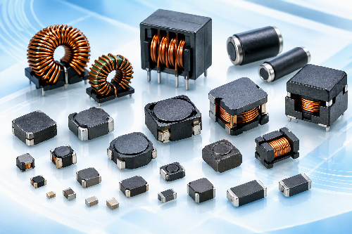

RF Chip Inductors
RF 매칭과 필터링용 소형 고주파 인덕터.
Viking Tech 인덕터 제품군을 용도별로 확인할 수 있습니다.

RF 매칭과 필터링용 소형 고주파 인덕터.
소형 다층 및 높은 Q의 권선형 RF 인덕터.
Ferrite 재료 기반 신호·전원 회로용 제품.
고주파 노이즈 억제용 Ferrite Bead.
신호선 공통 모드 노이즈 억제용 필터.
전원 변환용 차폐·비차폐 Power Inductor.
리드형 전원 및 필터 회로용 Choke.
차량 전장 전원 및 노이즈 제어용 제품.
첨부된 Viking 카탈로그 분류를 기준으로 정리했습니다. 실제 공급 가능 시리즈와 최신 사양은 MAXGAIN SYSTEMS에 문의해 주세요.